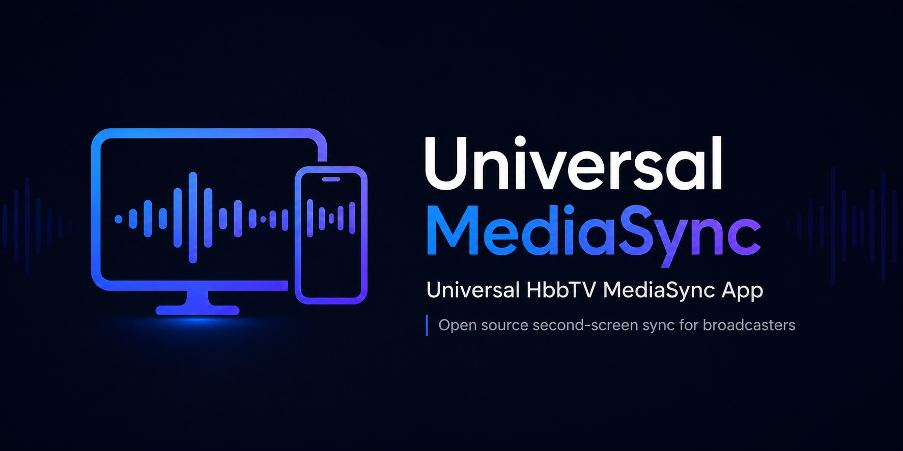
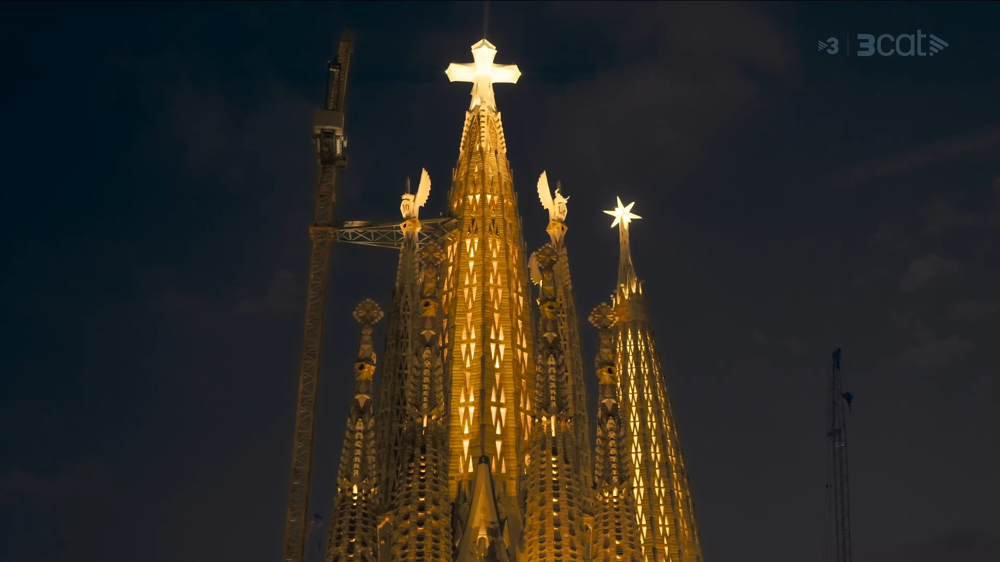

Universal HbbTV MediaSync
A showcase of synchronized, immersive and accessible multi-device media experiences that keep the television at the center.
4 live demonstrations · HbbTV Inter-Device Synchronization · DVB-CSS
Sagrada Família with director's commentary
A synchronised viewing experience enhanced with exclusive commentary from the director, delivered on a companion device while remaining perfectly aligned with the main programme.
- Private listening
- Frame-accurate sync

Sign language on a second screen
A television news broadcast accompanied by synchronised sign-language interpretation displayed on a tablet, providing a more flexible and accessible viewing experience.
- Sign language
- Frame-accurate sync
Eclipse XR Experience
An immersive XR experience that explains how a solar eclipse works and how to observe it safely. Viewers watch content on television about the solar eclipse visible from Catalonia on 12 August while a second device — smartphone, tablet or VR headset — delivers synchronised augmented reality: interactive 3D models and volumetric video characters that add visual perspectives and help users understand the eclipse.
- WebXR
- XR Glasses Ready
Personal AI agents connected to the television
A demonstration of how a user's personal AI agent can securely interact with television agents to provide information, control the TV and recommend personalised content, while maintaining the highest possible level of privacy.
- Agent to agent
- Private agent
- DVB-I